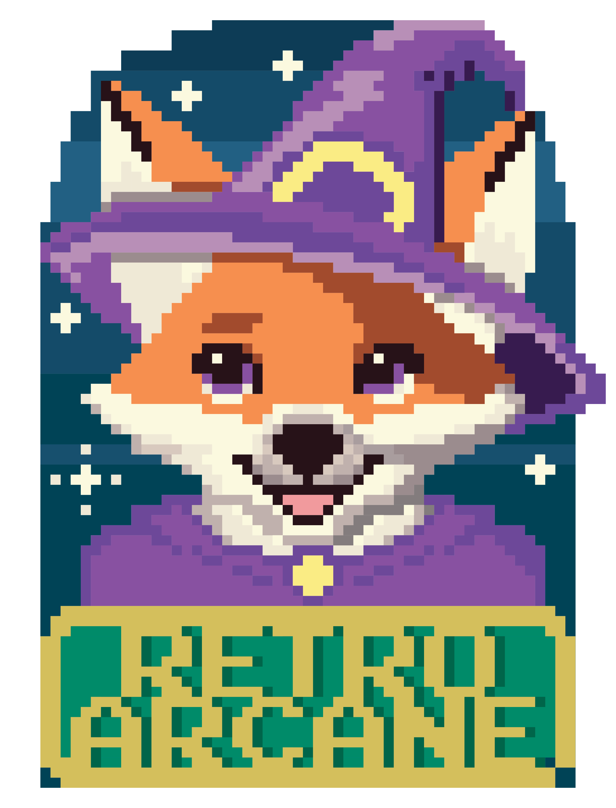

Big heart. Small studio. Real magic.
Independent Game Studio
Retro Arcane was born the way the best things usually are. Someone had a vision, and someone else refused to let it stay a dream.
Creative Director Bria had spent years playing through demos and titles across every genre, finding herself inspired to create worlds of her own. Studio Director Rachel had the technical skills to make it happen. So in 2026, they built a studio.
Retro Arcane is a female-owned independent game studio based in Texas. We make games that feel like something. Cozy and whimsical. Action-packed and intense. Narrative puzzles that make you think. Card builders that keep you up past midnight. Whatever the concept, we bring the same thing to every project: craft, heart, and a genuine love for the experience of play.
We believe you don't have to have a Triple A budget to deliver a Triple A experience. You just have to care enough to get it right.
Cozy Survival · Necro-Management Sim
Tend a graveyard, raise the dead, and face what comes in winter. A feminine, whimsical take on necromancy — dark themes made cozy.
Action-Adventure · Narrative RPG
Sail a moonlit alien sea, forge bonds between three unlikely species, and stop a kaiju war before it ends a civilization. LOTR meets the open ocean — on a world where humans became gods.
▶ Explore the WorldWe are just getting started.
Interested in collaborating, contributing, or just want to say hello? We would love to hear from you.
hello@retroarcane.com